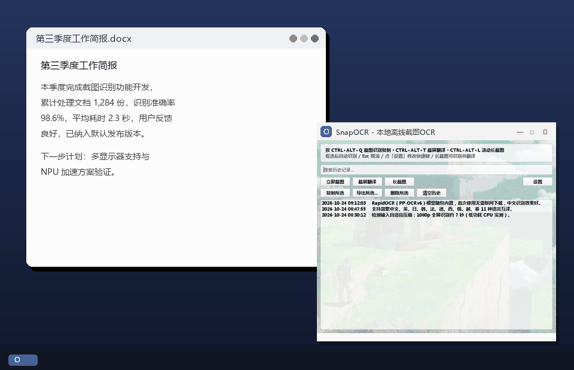
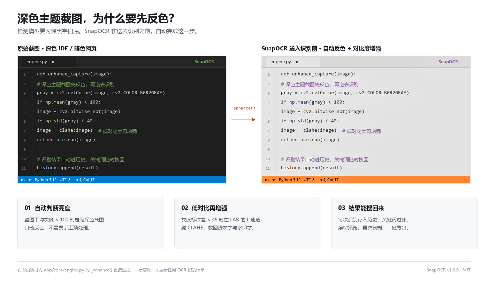
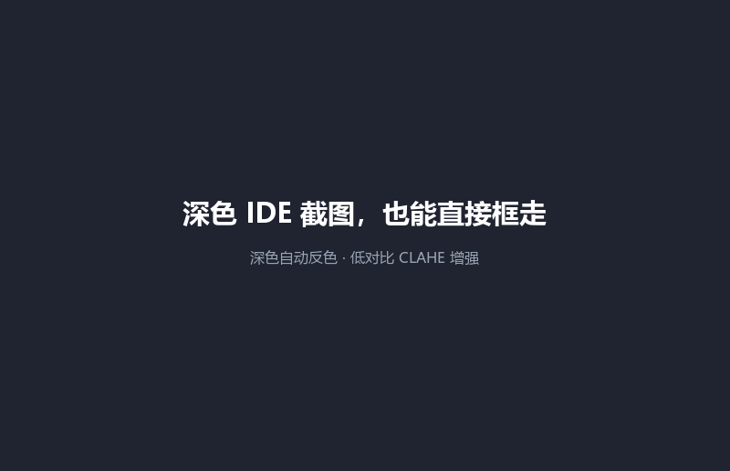
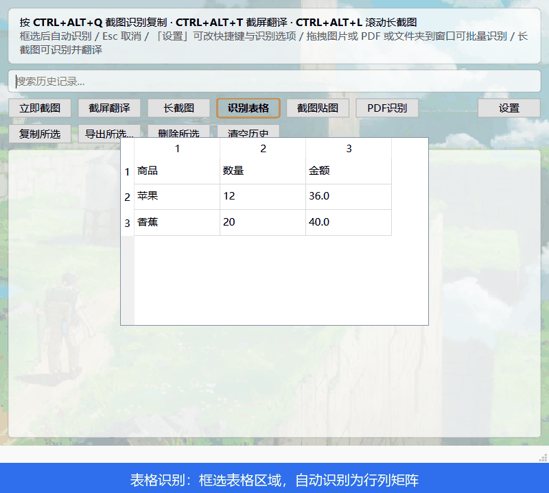

- 完全离线
- 免费开源 MIT
- Windows 10/11
截屏取字，
只按一次热键
深色 IDE 与暗色网页自动反色增强，识别过的内容随时能搜回来。识别全程在本机完成，不上传任何截图。

系统自带 OCR 够用时，不需要它
它解决的是自带工具容易失手的那三类时刻。
深色界面整行漏识别
深色背景配浅色字，检测模型容易漏检。先判断整体亮度自动反色，再对低对比度区域做 CLAHE 增强，最后才送去识别。代码、报错栈、暗色文档框完就能复制。
剪贴板只记得最后一次
每次识别结果自动进历史，关键词即时过滤、悬停浮窗预览、双击再次复制，可导出 txt / docx / pdf / md / xlsx。
一整页、一整批
滚动长截图拼接、PDF 逐页识别、文件夹拖入批量队列，配合表格转 Excel 与截屏翻译，一次做完。

一个热键之后，还能做这些
所有功能都在同一个窗口里，不需要在几个工具之间来回倒。
框选识别
自动反色与 CLAHE 增强、多行合并自然段、中文智能排版去字间空格、无文字时兜底解二维码。
批量与 PDF
拖入文件夹递归收集去重（上限 500 张）；PDF 逐页约 144 dpi 渲染，带进度条可取消，结果按页分组。
表格转 Excel
框选表格识别为行列矩阵，预览可编辑，空单元格不会导致右侧列错位，一键保存 xlsx。
长截图
Ctrl+Alt+L 框选后自动注入滚轮逐帧拼接，滚到底自动结束，可直接识别或翻译。
截屏翻译
Ctrl+Alt+T 框选即译，原文可编辑后重译，11 种语言互译，免费无需 API Key。
截图贴图
把框选内容钉在桌面置顶，可同时钉多张，滚轮缩放、Ctrl+滚轮调透明度。


下载
两个链接是同一个文件，SHA-256 一致。官方直链慢或断流时用镜像。
| 产物 | 官方直链 | 国内镜像 | SHA-256 |
|---|---|---|---|
| 7z 绿色包（推荐） 120 MB · 启动约 2.5 秒 |
下载 | ghproxy | 29fec864…be55177 |
| 单文件 exe 163 MB · 每次启动自解压 |
下载 | ghproxy | 68dbec68…683a5abf |
解压得到 SnapOCR/ 文件夹，进入后双击 SnapOCR.exe 即用。完整校验值见 Release 页。
下载到一半断流：用支持断点续传的下载器，或
curl -C - -L -o SnapOCR.7z <镜像链接> 重跑续传。常见问题
识别会把截图传到服务器吗？
不会。内置简体中文模型，默认识别全程离线。切换到繁中 / 英 / 日 / 韩时首次需联网下载对应模型，缓存在本地后即可离线使用。截屏翻译功能会调用在线翻译服务，与 OCR 识别是两回事。
支持 macOS / Linux 吗？
目前只提供 Windows 10/11 x64 二进制。Linux / macOS 可从源码运行，但长截图的自动滚轮注入依赖 Win32 API，在这两个平台上会给出提示；其余识别功能可用。
深色截图为什么比普通截图难识别？
文字检测模型主要在白底黑字样本上训练，深色背景配浅色字时对比度分布相反，容易整行漏检。SnapOCR 在送进模型前判断整体亮度并自动反色，再用 CLAHE 提局部对比度。
历史记录存在哪？会丢吗？
%APPDATA%\SnapOCR\history.json。写入采用「临时文件 + 原子替换」，断电或磁盘写满不会把已有记录截断成半个文件；文件被手工改坏时程序会跳过损坏条目并提示，不会双击没反应。
热键冲突、想改键怎么办？
设置 → 快捷键，可录制主截图 / 截屏翻译 / 长截图三个热键，即时生效。默认是 Ctrl+Alt+Q / Ctrl+Alt+T / Ctrl+Alt+L。